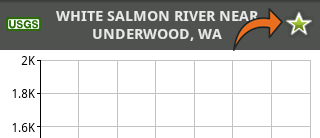
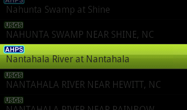
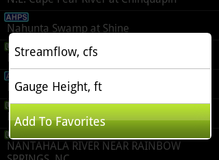
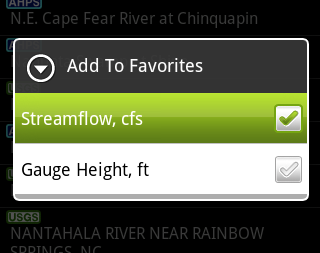
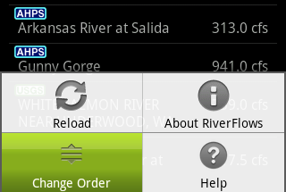
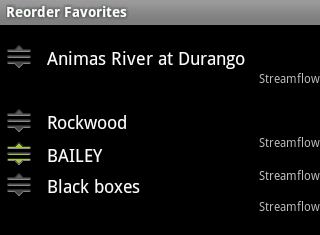
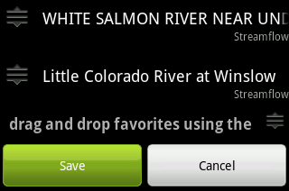

Adding Favorites
There are two ways to add favorites:
From The Chart Screen
To select a favorite from the chart screen, simply touch the star in the upper right hand corner.

From The Site List
This approach is quicker if you need to select multiple favorites in the same state.
- Touch and hold the name of the site you'd like to add. This will produce a context menu.

- Select Add To Favorites

- Select Measurement

Editing Favorites
You may rename or change the measurement for your favorites. Do this from the Favorites tab on the home screen
Reordering Favorites
- Select the "Change Order" menu item from the menu in the Favorites tab.

- Drag and drop your favorites into the desired order using the handle icons on the left.

- Scroll to the bottom of the list and press the save button.

Removing Favorites
On the chart screen, uncheck the star in the upper right hand corner.